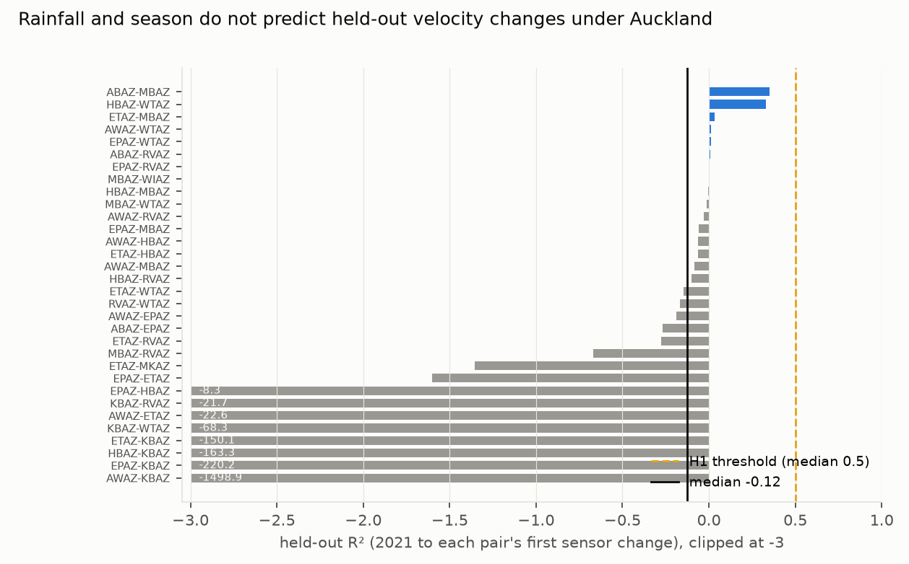
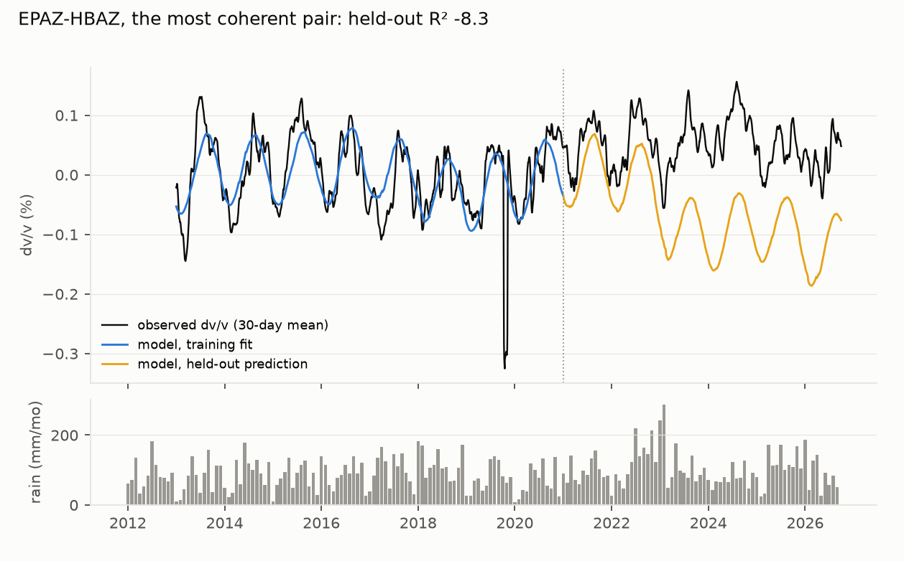

Verdict: H1 Refuted.
- H1 (the hydrological model explains most of the held-out dv/v): Refuted.
- The median held-out R² across the 33 scored pairs is −0.08 (95% pair bootstrap −0.19 to −0.01).
- 24 of the 33 are negative, and no pair reaches 0.5.
- The model explains little even in training: median R² 0.19.
- It is not one modelling choice. Every variant of the full model leaves the median negative:
- every sensor-epoch boundary as a break, with references recomputed (−0.15);
- temperature in place of the annual sinusoid (−0.07);
- the drift held fixed (−0.12, post hoc);
- a draining rainfall kernel (−0.10, post hoc);
- segments split at data gaps of more than 7 days instead of 90 (−0.27).
- Even a season-only model, without rain or drift, is slightly worse than the held-out mean (median −0.02). It beats the full model on 17 of 33 pairs.
- How much dv/v wanders. At 30-day smoothing, the held-out dv/v varies by 0.077% (2 SD about its own mean,
median across pairs).
- The preregistered residual floor (2 SD of the model residual) is 0.088%.
- A season-only model leaves 0.075%.
- Pre-eruptive velocity decreases at Piton de la Fournaise were of the order of 0.05% (Brenguier et al. 2008), so a precursor of that size would sit inside Auckland's ordinary month-scale wander at these frequencies.
- Neither the March 2020 lockdown nor the record-wet January–February 2023 shows up.
- Lockdown: the median step is +0.001% (−0.002% with a 15-day guard against the smoother), and 2 of 33 pairs lie beyond twice their residual SD.
- 2023 storms: the median held-out residual is +0.025% in 19 pairs, with none beyond twice its residual SD.
- Review fixes (D1).
- KBAZ flipped polarity across a 2014–2018 data gap and had a 52-day dead-channel block, both of which entered the first version's references.
- Segments now break on dip changes and on data gaps of more than 90 days. Dead and polarity-mismatched days are dropped and counted, and stretching uses a cubic spline.
- A first fix that split segments at gaps of more than 7 days cut many records at routine outages and gave −0.27. It is kept as a sensitivity.
- The first version (median −0.12, floor 0.136%) is kept in
results/tables/v1_pre_review/.
In plain terms
Volcanoes can announce themselves by subtly changing how fast seismic waves travel through the ground. Background "noise" from ocean waves and city traffic can be used to track those changes day by day. Before such a signal can warn of anything under Auckland, we need to know how much it moves for ordinary reasons, mainly rain soaking into the ground and the seasons.
We processed 13 years of continuous recordings from 11 GeoNet seismometers across Auckland's volcanic field. We built a model of how rain and the seasons should change the wave speeds, trained it on 2013–2020, and checked whether it predicted 2021–2026.
It did not. On 24 of the 33 station pairs with clean enough signals, the model predicted the later years worse than simply guessing their average. Averaged over a month, the wave speeds wander by about 0.08% for reasons the model cannot account for, the same order as the changes seen before eruptions at a much-studied French volcano. Even the very wet 2023 summer, including Cyclone Gabrielle, left no clear mark. So Auckland's monitoring cannot yet rely on a simple rain-and-season baseline at these frequencies.
What was asked
The lead (auckland-nz-avf-dvv-hydrological-baseline, Auckland and NZ signature area) asked whether ambient-noise
dv/v across the Auckland Volcanic Field has a predictable hydrological baseline, as at other volcanoes (for example
Merapi; Sens-Schönfelder & Wegler 2006). Such a baseline would set the noise floor for unrest detection. No dv/v
monitoring of the field was found.
The critic's design fix: the model is trained on 2013–2020 and tested from 2021, with nothing refitted.
How it was done
- Correlations. GeoNet day files are streamed from S3. Each station-day is:
- decimated to 20 Hz and bandpassed at 0.3–5 Hz;
- spectrally whitened, then normalised with a running absolute mean;
- screened with a transient mask on 30-minute windows.
30-minute cross-correlations (±100 s) are stacked daily for the 55 vertical-component pairs, needing at least 24
windows a day.
- Segments (D1). A station segment continues while the sensor description and dip are unchanged and the
station's data have no gap of more than 90 days (7 days as a sensitivity).
- dv/v.
- Stretching at 0.5–2 Hz on the symmetric coda, from t₁ = max(5 s, 2d / 1.5 km s⁻¹) to t₁ + 20 s.
- The current stack is an 11-day centred moving stack, and the reference is the segment's 2013–2020 mean. The
stretched trace is evaluated with a cubic spline (D1).
- The grid runs ±2%, in 0.05% steps refined to 0.005%. (The plan named a 0.01% grid, which was not logged in the
first version.)
- Days whose stack has no coda energy (dead channel) or correlates negatively with the reference are dropped.
- Coverage: 186,439 of 200,667 pair-days were measured. The drops are segments with fewer than 60 training days
(9,360), polarity mismatch (2,346), days outside segments (1,232), dead channel (852) and short stacks (438)
(results/tables/coverage.json).
- 53 pairs give dv/v. The result is smoothed with a 30-day running mean.
- The model: segment constants + a · P_τ (rainfall diffused to depth, erfc kernel, τ from 1 to 500 days) + an
annual sinusoid + a linear drift. It is ordinary least squares, with τ chosen by training fit.
- Training runs 2013–2020. The held-out period runs from 2021 to the end of either station's segment.
- Pairs are scored with mean training coherence of at least 0.5 and at least 180 held-out days: 33 of 53.
- Forcing: ERA5 daily rainfall and temperature at the field's centre, from the Open-Meteo archive (no gaps).
- Plausibility (G3): results/plausibility.md, with three pair-days recomputed by hand from the raw
correlations.
Results
H1 (results/figures/F1_heldout_r2.png)


| analysis | scored pairs | median held-out R² (95% CI) | median 2 SD (30-day smoothing) |
|---|---|---|---|
| preregistered (D1 segments: dip changes, data gaps > 90 days) | 33 | −0.08 (−0.19 to −0.01) | residual 0.088% |
| held-out dv/v about its own mean (no model, D1) | 33 | — | 0.077% |
| season-only model: segment constants + annual sinusoid (D1) | 33 | −0.02 | residual 0.075% |
| every epoch boundary a break, references recomputed (secondary 4) | 34 | −0.15 (−0.48 to −0.01) | residual 0.072% |
| data gaps > 7 days as segment breaks (D1 sensitivity) | 31 | −0.27 (−0.35 to −0.15) | residual 0.076% |
| temperature in place of the sinusoid (secondary 5) | 33 | −0.07 | residual 0.086% |
| drift held at its end-of-training value (post hoc) | 33 | −0.12 | — |
| draining rainfall kernel exp(−lag/τ) (post hoc) | 33 | −0.10 (−0.26 to −0.06) | residual 0.077% |
- The fitted τ piles up at the ends of its grid (1 day for 11 pairs, 500 days for 8), as expected when the rain term has no stable relation to dv/v.
- By pair type:
- borehole–borehole pairs: −0.19 (20 pairs);
- pairs with a surface sensor: −0.02 (13 pairs).
- Coherence. Median training coherence is 0.53 across 53 pairs.
- Post hoc: the 22 scored pairs whose 11-day stacks correlate with their reference at 0.7 or more at zero stretch give a median held-out R² of −0.11 and a no-model wander of 0.066%.
- So the verdict does not come from the noisier pairs.
What fails (results/figures/F2_example_pair.png)


- In training. On the most coherent pair (EPAZ–HBAZ), the model captures an annual cycle in 2013–2020.
- From 2021. The observed dv/v stays high, while the model's rain term, carrying the wet 2022–23 anomaly, pulls its prediction down (held-out R² −5.5). The cycle is real, but neither its level nor its phase in later years is predicted.
- Not just the kernel or the drift. A draining kernel, which forgets old rain, does no better, and neither does freezing the drift. A season-only model is about as good as the held-out mean (median −0.02).
What this does and does not show
- No simple rainfall-and-season baseline for Auckland at 0.5–2 Hz. dv/v wanders about 0.08% at month scale for reasons this model cannot capture. That is comparable to precursory changes reported elsewhere, so a volcanic signal would need to be several times larger to stand out with this processing.
- Not shown:
- That hydrology does not affect velocities. ERA5 rain at one point stands in for heterogeneous basalt aquifers, and the groundwater bores, which have click-through terms, were not used.
- Other methods: other frequency bands, cross-components or single-station methods.
- Volcanic hazard. This is a methods baseline, and says nothing about hazard.
- Station problems cut the usable pairs to 33. Urban noise, sensor changes, a polarity flip and a dead channel at KBAZ all take a toll. Several held-out windows end early at segment ends.
- Care. The maunga of the Auckland Volcanic Field are taonga of Ngā Mana Whenua o Tāmaki Makaurau, co-governed by the Tūpuna Maunga Authority. These results belong with the Authority, Auckland Emergency Management and GeoNet.
Process and deviations
- Preregistration:
plan.md. The correlation and model code were committed before any dv/v was computed. - Deviations (
deviations.md):- technical fixes (a missing package, an import path);
- two post hoc checks;
- the pre-review gate (G5, G6);
- D1, after independent review:
- KBAZ segmentation (dip change and data gaps > 90 days, with 7 days as a sensitivity);
- dead-channel and polarity checks with coverage accounting;
- cubic-spline stretching;
- recomputed references for the every-epoch variant;
- the no-model and season-only floors;
- the guarded lockdown windows;
- a post hoc coherence breakdown;
- the corrected Brenguier attribution.
- Independent review: Fable, "fix first" (
review/review.md). This version addresses it; a confirmation pass is queued.
Reproducing it
code/correlate.py run --workers 8.code/forcing.py.code/dvv.py, thenRULE=every_epoch code/dvv.pyandGAP=7 code/dvv.py.code/model.py, thencode/model.py every_epochandcode/model.py gap7.code/secondary.py.code/posthoc_drift.pyandcode/posthoc_kernel.py.code/figures.py.code/handtrace.py(G3).